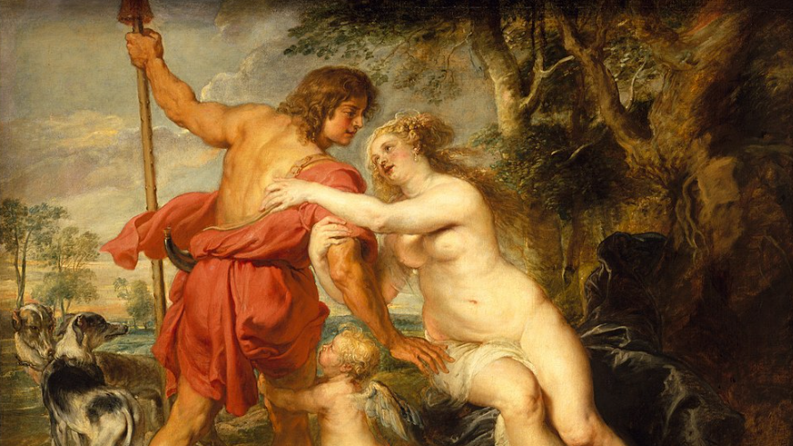
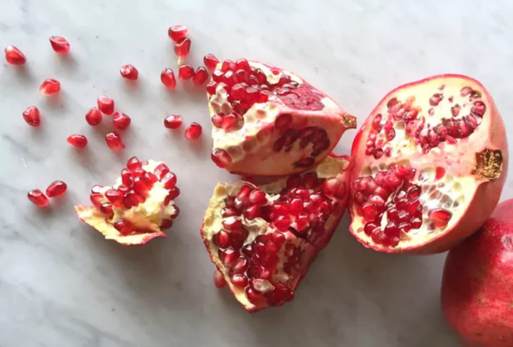

Searching Out the Root of the Red King and White Queen
He that maketh me white shall make me red, for white and red proceedeth from one Root...
The roots of Alchemy are ancient and ideas expressed by Alchemists of Renaissance Europe can be found also expressed by Greek philosophers, Indian gurus, or ancient Chinese sages, but the origins of Alchemical symbols are not so apparent, which could be because, in European history, there is a gap. The Alchemy of the Greco-Roman world seems to have vanished from Europe with the rise of Christianity, though Christianity arguably has a brand of Alchemy all its own.
Almost a thousand years after the birth of Christ, what is commonly called Alchemy and its companion religion Hermeticism were reintroduced to Christian Europe from the Muslim state of Andalusia. The general philosophical infusion from Al-Andalus, which brought even Greek philosophy back to the region from which it sprang, was influential in the cultural transformation seen as a rebirth, hence called the Renaissance.
With this rebirth of "classical" ideals and values came a contagious interest in Greco-Roman mythology that lasted for centuries. The Roman myth of Venus and Adonis was not only the subject of Shakespeare's poem, but of many paintings.
The Concoction of Art and Alchemy
Art had a different place in the social landscape in the middle of the second millennium than it does now. Whereas art in modern times is mostly seen as an avenue for artists to express their individual identity, to prove their uniqueness, or just to make money, artists in the Renaissance, especially among their patrons, were akin to priests. In Alchemy, Art is seen as a complement to Nature, though this is Art in the sense of skill or craft, as in the Art of Healing, so Alchemy itself is called the "Royal Art". When it came to the transformation of society though, the Arts as we generalize them now were seen as "like leaven which a woman took and measured and kneaded throughout her dough". This perspective is known to have affected works of art (painting) and architecture. Cathedrals, for example, were often built with the belief that the design of the building itself could facilitate what we might call the religious experience.
Many of the paintings done from the 1400s - 1700s at least were commissioned by wealthy patrons to serve as transformative agents. Hence, many of these paintings have, as their subject, elements of mythology--which arguably serves the same purpose. If one looks, one might find evidence that the same was true for poetry.
One wealthy family in particular, credited with the flourshing of the Italian Renaissance by their funds, was the Medici. Cosimo de Medici (1389 to 1464), the founder of the Medici Dynasty was known for his infuation with exotic philosophical texts coming from outside Christian Europe, notably the Hermetica and NeoPlationist texts. Hermeticism and Alchemy are joined at the hip and Hermes is often held up as the patron god this art.
Cosimo I de' Medici (1519-1574), a descendant of Cosimo the Elder's brother, built an Alchemist laboratory in the Palazzo Vecchio (townhall) where his son Francesco is depicted working in the painting on left. In this laboratory, adorned with paintings and sculptures, artists and alchemists would meet.
The Medici were known for patronizing famous artists such as Leonardo Da Vinci, Michelangelo, and Boticelli. One such patronage relevant here was Marie de Medici's patronage of the painter, Peter Paul Rubens. Browsing the Marie de Medici Cycle , a series of paintings commisioned to Rubens in 1622, the prominence of red and white is apparent. The two examples below: Left: The Education of the Princess (Marie), Right: The Coronation of Maria de Medici

In the Education of the Princess, we see the young Maria attended by the Three Graces, as well as a floating man in a winged helmet we can safely assume is Hermes. Compare to Boticelli's Primavera (1470 - 1480)
Of course, Marie was not the only patron of Rubens. King Philip IV of Spain commissioned him to do a series of more than 60 paintings on themes from Ovid's Metamorphoses.
The Challenger Mars
The use of red and white in paintings of Venus and Adonis appears also in paintings of Mars and Venus. Mars and Adonis are typically viewed as distinct deities, and they are associated with different planets from among the Seven Classical Planets, Adonis with the Sun, Mars with the "red planet". But then, Venus wasn't only associated with the planet of her name, but also with the Moon. Also worth noting that Mars and Venus are the two planets on either side of the Earth in the rank of orbits, which leaves the possibility that they represent the two extremes for which the Earth is the Golden Mean.

Mars
Venus
While it may be a difficult case to make that the arrangement of the planets lead to Mars and Venus being the original Red King and White Queen without evidence, that they are candidates for this position should be considered because from among the symbols for the planets and various pairs of Alchemical symbols linked with the royal couple, it was the symbols for Mars and Venus that came to represent the sexes.
Sulfur
Mercury
Sun
Moon
Nitre
Salt
Fire
Water
In Shakespeare's poem, Venus tries to persuade Adonis to love by telling him how she subdued and softened Mars, a conquering god without rival.
‘I have been woo’d, as I entreat thee now, Even by the stern and direful god of war, Whose sinewy neck in battle ne’er did bow, Who conquers where he comes in every jar; Yet hath he been my captive and my slave, And begg’d for that which thou unask’d shalt have. ‘Over my altars hath he hung his lance, His batter’d shield, his uncontrolled crest, And for my sake hath learn’d to sport and dance To toy, to wanton, dally, smile, and jest; Scorning his churlish drum and ensign red Making my arms his field, his tent my bed. ‘Thus he that overrul’d I oversway’d, Leading him prisoner in a red-rose chain: Strong-temper’d steel his stronger strength obey’d, Yet was he servile to my coy disdain. O! be not proud, nor brag not of thy might, For mastering her that foil’d the god of fight.
Red and white as individual colors have had significant symbolic meaning for thousands of years in the general culture. Some of this may be due to nothing more than emotional or unconscious response to colors in general, hence red's regular use in expressing love, and white's seemingly universal association with innocence. Some of red's significance can be attributed to its place among the three primary colors recognized as early as the Roman Empire: red, blue, and yellow, which not coincidentally are colors associated with royalty, red being the one most associated with power. However, some of the color's significance is clearly due to red's association with a chemical compound known from ancient times as cinnabar.
A Case For Cinnabar
Cinnabar is a red salt compound of Sulfur and Mercury mined since prehistoric times. In practical use, cinnabar was valued as the go-to source of the liquid metal, mercury, and ground into a powder as a pigment, commonly known as vermillion, for red paint.
The primary prehistoric use of the mineral was grinding it to create vermillion, and its earliest known use for this purpose is at the Neolithic site of Çatalhöyük in Turkey (7000-8000 BC), where wall paintings included cinnabar's vermillion. Source
üú≠
Alchemical Symbol for Cinnabar
Being the product of marriage between an acid and a base, salts in general were seen to depict the union of opposites, but among salts, cinnabar was held up as the prime picture. So, Sulfur and Mercury were also used as symbols for the afore-mentioned king and queen in both Western and Eastern Alchemy, which the Chinese called Yin (Mercury) and Yang (Sulfur). Of course, these two were initially united in one essence called Pure Yang (Cinnabar) before separating into their masculine and feminine counterparts. Whether it was for qualities possessed by its components or by cinnabar itself, that it held high status is clear. In his 'Natural History', the Roman author, Pliny the Elder, states:
(Cinnabar) is of great importance among pigments at the present day, and also in old times it not only had the highest importance but even sacred associations among the Romans. Verrius gives a list of writers of unquestionable authority who say that on holidays it was the custom for the face of the statue of Jupiter himself to be coloured with cinnabar, as well as the bodies of persons going in a triumphal procession, and that Camillus was so coloured in his triumph, and that under the same ritual it was usual even in their day for cinnabar to be added to the unguents used at a banquet in honour of a triumph, and that one of the first duties of the censors was to place a contract for painting Jupiter with cinnabar. For my own part I am quite at a loss to explain the origin of this custom, although at the present day the pigment in question is known to be in demand among the nations of Ethiopia whose chiefs colour themselves all over with it, and with whom the statues of the gods are of that colour.
Ancients knew how to decompose cinnabar for extracting mercury, but also, how to merge the couple back together again, thus, symbolically, cinnabar was linked with the Philosopher's Stone, the product of the Chemical Wedding, or even synonymous with it. The Chinese term 'Neidan'(內丹) used to refer to esoteric Taoism or Chinese Alchemy is itself composed of two parts: Nei(內 = "inner") and dan(丹) which is often translated as "alchemy" but the online dictionary wordhippo.com gives the definition of 丹 as: red, cinnabar, pellet, powder.
In China, the earliest known use of cinnabar is the Yangshao culture (~4000-3500 BC). At several sites, cinnabar covered the walls and floors in buildings used for ritual ceremonies. Cinnabar was among a range of minerals used to paint Yangshao ceramics, and, at Taosi village, cinnabar was sprinkled into elite burials. Source
It is supposedly for this symbolic significance of cinnabar that the Chinese flag is red. Red in general was seen as the zenith of colors and, like gold, the champion of metals, was linked with the Sun. So, also in Japan red is linked with the Sun, but more specifically with the Shinto Sun-goddess, Amaterasu, who is often depicted in art like the Japanese flag, in red and white.

In addition, the red bindi dot that married women in India wear between their eyes, a symbol of the third eye, was for thousands of years painted on with vermillion, known in India as sindoor, itself a symbol of marriage. This tradition began in the Harappan civilisation which existed in India from 3300–1300 BCE and persisted until it was discovered that mercury is toxic. Bindi is the feminine form of bindu, the white "point" from which the universe germinated in Shaivism described as a white seed (masculine) in red fleshy fruit (feminine), which together are the hermaphrodite deity, Shiva-Shakti.
The description of Shiva-Shakti as a white seed in red fleshy fruit is opposite the typical Alchemical pairing of color and gender, and is also opposite the pomegranate, a fruit with red seeds and white flesh, though the skin is red... The pomegranate has/had significant symbolic meaning around the world.
Pomegranate Around the World (according to ChatGPT)
- Ancient Egypt: The pomegranate was associated with prosperity and ambition. It was often included in tombs to ensure the deceased had food in the afterlife.
- Judaism: The pomegranate is a symbol of righteousness, knowledge, and wisdom. It is mentioned in the Torah and is one of the seven species of fruits and grains named in the Hebrew Bible as special products of the Land of Israel. The pomegranate’s 613 seeds are said to correspond to the 613 commandments of the Torah.
- Christianity: In Christian symbolism, the pomegranate represents resurrection and eternal life. It appears in religious art, often in depictions of the Virgin Mary and Christ, symbolizing the fullness of Jesus' suffering and resurrection. The fruit’s many seeds can also symbolize the unity of many believers within one church.
- Islam: The pomegranate is mentioned in the Qur'an as one of the fruits that will be found in the gardens of Paradise. It is also seen as a symbol of beauty and paradise.
- Buddhism: In Buddhist symbolism, the pomegranate represents fertility, abundance, and the blessings of prosperity. It is one of the three blessed fruits, along with the peach and the citrus.
- Chinese Culture: The pomegranate is a symbol of fertility, prosperity, and numerous offspring. In Chinese wedding traditions, pomegranates are often used to wish the newlyweds many children.
- Persian Culture: The pomegranate is a symbol of fertility, love, and rebirth. It is a significant part of Persian mythology and culture, often featured in poetry and art.
- Ancient Greece and Rome: Besides the Persephone myth, the pomegranate was a symbol of marriage and fertility. It was associated with the goddess Hera (Juno in Roman mythology), who was the goddess of marriage and childbirth.
- Alchemy: In alchemical symbolism, the pomegranate often represented the unity of opposites, the convergence of different elements to create something whole and unified.
In Sandro Botticeli's 'Madonna of the Pomegranate' (1487) the baby Jesus holds an open pomegranate over his heart, suggesting that its seeds are analogous to the seeds of the Logos which pour out like drops of blood, for the pomegranate is a symbol of resurrection and the Passion of the Christ in Christianity. The Sufi poet Rumi ties the pomegranate, the red anemone and Alchemy together in this short poem, which likens the opening of the pomegranate to the opening of the heart, and thus the ripe pomegranate with the spiritually mature:
If you buy a pomegranate, buy one whose ripeness has caused it to be cleft open with a seed-revealing smile. Its laughter is a blessing, for through its wide-open mouth it shows its heart, like a pearl in the jewel box of spirit. The red anemone laughs, too, but through its mouth you glimpse a blackness. A laughing pomegranate brings the whole garden to life. Keeping the company of the holy makes you one of them Whether you are stone or marble, you will become a jewel when you reach a human being of heart. Plant the love of the holy ones within your spirit; don’t give your heart to anything but the love of those whose hearts are glad. Don’t go to the neighborhood of despair: there is hope. Don’t go in the direction of darkness: suns exist. The heart guides you to the neighborhood of the saints; the body takes you to the prison of water and earth. Give your heart the food of holy friends; seek maturity from those who have matured.
The pomegranate was also a sacred object to Aphrodite/Venus and, along with fertility, symbolized the loss of virginity in the consummation of marriage in her religion or symbolism associated with the Goddess . Coupling this symbolism of the pomegranate with spiritual awakening and the opening of the heart (as in Rumi's poetry) provides a possible link with the Sacred Marriage as a spirtual awakening that is a "popping of the pomegranate" i.e. an opening of the heart which is not only a catharsis or release, but a loss of virginity, a yielding, a willingness to be spiritually penetrated and surrender to the will of Love.
Summing the Total
So, we have reason to believe that red's symbolism in Alchemy is Alchemical in origin, i.e. it has probable natural precedents which can serve as foundation for parabolic interpretations. That red would represent the final stage in Alchemical transmutation makes sense if cinnabar is seen to epitomize the result of the Chemical Marriage. Where the stages are four: Nigredo (Blackening), Albedo (Whitening), Citrinitas (Yellowing), and Rubedo (Reddening), cinnabar as a natural precedent makes sense as Mercury can be linked with white, and Sulfur with yellow.
We also have evidence of red and white appearing together in cultural/religious contexts outside of Europe, but not a reason as to why these two would be paired together.
Pending further research, it appears that the Red King and White Queen became prominent symbols in European Alchemy during the Renaissance, but seem to have evolved out of more ancient uses of the colors.